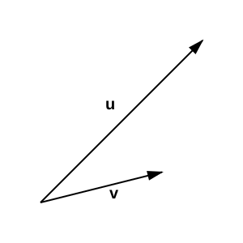
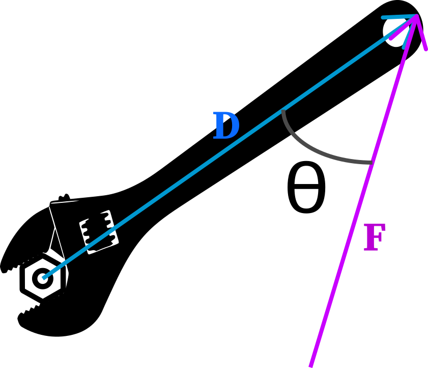

Homework Section 12.5
- Let `bb(u) = << -1, 2, -1 >>` and `bb(v) = << 2, 1, 1 >>`. Find `bb(u) xx bb(v)` and verify that it is orthogonal to both u and v.
- Let `bb(v) = 2bb(i) + bb(j) + bb(k)` and `bb(w) = 3bb(i) - bb(k)`. Find two vectors that are orthogonal to both v and w.
- Let `bb(u) = 3bb(i) - bb(k)` and `bb(v) = 2bb(j) + bb(k)`. Find `bb(u) xx bb(v)` and graph u, v, and `bb(u) xx bb(v)` in component form.
-
Examine the below picture. Is `bb(u) xx bb(v)` directed towards your face or away from your face?

- Suppose `||bb(u)|| = 3`, `||bb(v)|| = 12`, and the angle between u and v is `(pi)/(6)` radian. Find `||bb(u) xx bb(v)||`.
- Use the cross product to determine the area of a parallelogram that has vertices `(2, 0)`, `(4, 2)`, `(6, 1)`, `(4, -1)`.
- Find the volume of the parallelepiped determined by `bb(u) = -bb(i) + 2bb(j) - bb(k)` and `bb(v) = 2bb(i) + bb(j) + bb(k)` and `bb(w) = 3bb(i) - bb(k)`.
-
A ten-inch long wrench (handle represented by vector `bb D`) grips a bolt located at the origin. A force of magnitude 20 pounds is applied to the end of the wrench at an angle of `theta = 30^circ` to the handle. Find the magnitude of the torque on the bolt.

- Refer to the last problem. Find the magnitude of the force needed to apply 420 foot-pounds of torque on the bolt if length of the wrench remains unchanged, but the force is applied in the direction of `<< 1, 2, 0 >>`. (Hint: Let D lie on the positive x-axis. Note that you are looking for `||bb(F)||`).